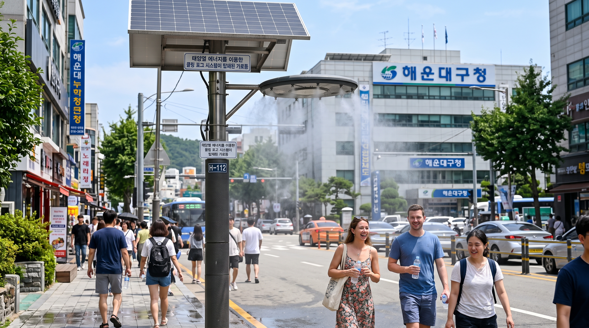

우리가 찾은 문제
- 이번 여름이 매우 더웠습니다.
- 뉴스에서는 폭염으로 인한 온열질환자가 많다는 소식을 접했습니다.
- 최근 발생한 네팔 대홍수도 기온 상승으로 빙하가 녹아 발생한 문제라는 것을 깨달았습니다.
우리의 질문
우리가 어떻게 하면 폭염 속에서도
안전하고 시원하게 지낼 수 있을까?
폭염이 점점 자주 찾아옵니다.
최근 10년의 폭염 발생일수는 심한 변동성을 보이다가 최근 들어 오르고 있습니다.
확인 퀴즈 ①
그래프에서 2020년 이후를 보고, 폭염일이 가장 많았던 해를 고르세요.
정답은 다음 장에서.
정답은 ② 2024년.
2020년 이후로는 2024년의 33일이 가장 많았습니다.
서울이 점점 더워집니다.
- 서울의 연평균기온은 점점 오르고 있습니다.
- 가장 추웠던 2011년(12.0℃)과 가장 더웠던 2024년(14.9℃)은 약 3℃ 차이입니다.
확인 퀴즈 ②
서울의 연평균기온은 해가 갈수록 어떻게 변했습니까?
- ① 점점 내려갔습니다.
- ② 거의 그대로였습니다.
- ③ 점점 올라갔습니다.
정답은 다음 장에서.
정답은 ③ 점점 올라갔습니다.
가장 추웠던 2011년(12.0℃)보다 2024년(14.9℃)이 약 3℃ 높았습니다.
전기를 만드는 에너지도 바뀌고 있습니다.
- 태양광·풍력 에너지로 만든 전기는 점점 늘고 있습니다.
- 태양광은 5년 사이 약 1.7배, 풍력은 약 1.5배로 증가했습니다.
그래서 우리는 이렇게 제안합니다.
- 지구를 덥게 하는 석탄·LNG 대신, 신재생에너지로 만드는 전기를 늘려야 합니다.
- 그런데 새 기술을 만드는 데는 돈이 많이 듭니다.
- 그래서 천천히, 단계적으로 기술을 발전시켜야 합니다.
우리의 캠페인
- 우리는 집에서 더울 때 에어컨을 가능한 한 26도로 틀겠습니다.
- 우리는 미래세대를 살아갈 인재로서 기후변화에 대한 경각심을 많은 사람이 가지도록 촉구하겠습니다.
1단계. 중단(Stop!)
기상청이 알려 준 "생존을 위한 3단계 행동수칙"입니다.
- 폭염 특보가 발효되면 모든 야외활동을 중단합니다.
이 그림은 AI가 만든 이미지입니다.
2단계. 이동(Move!)
- 냉방시설이 없는 실내는 위험합니다.
- 무더위쉼터, 그늘 등 시원한 곳으로 이동해 수분을 보충하며 쉽니다.
이 그림은 AI가 만든 이미지입니다.
3단계. 확인(Check!)
- 주변의 독거노인과 이웃의 안부를 확인합니다.
- 어지러움·두통이 생기면 즉시 119에 신고하고 시원한 곳으로 이동합니다.
- 당신의 작은 행동이 많은 생명을 살립니다.
이 그림은 AI가 만든 이미지입니다.
우리가 만든 것

폭염 피해를 줄이는 데 도움이 되는 쿨링 포그 시스템이 탑재된 물분사 가로등입니다.
이 그림은 AI가 만든 이미지입니다.
지금까지 폭염이 우리 생활에 어떤 문제를 일으키는지,
어떻게 해결할 수 있는지 확인해 보았습니다.
우리 팀
2조
폭염에서 친구들을 지키는 2조입니다.
들어 주셔서 고맙습니다.
1 / 7
← → 눌러서 넘기기